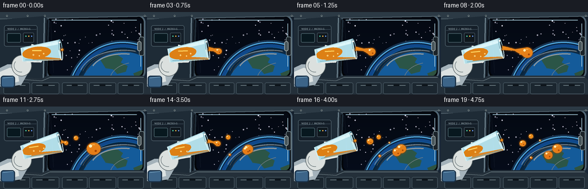
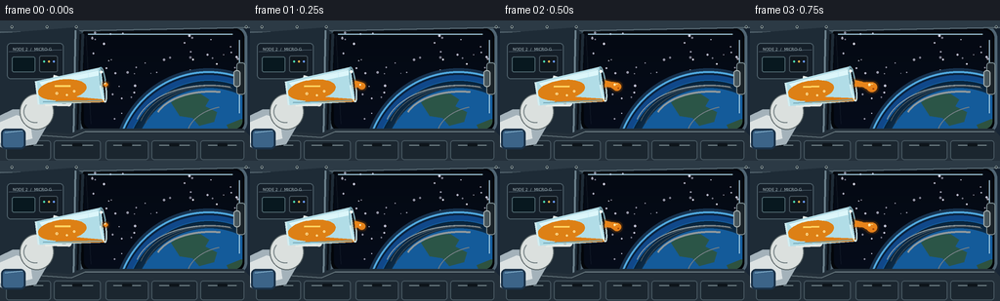

CODING AGENTS AS PIXEL WORLD MODELS
traex/GPT-5.6-Sol · mechanics_0007
点击播放 · 原生 RGB 像素
逐轮保存的候选
回放视频、检查图与代码变化。
每份候选均可单独播放。实际图片检查记录在下方工具轨迹中。
候选 01播放与检查图
点击播放 · 原生 RGB 像素


展开代码变化
--- 上一保存版本
+++ 本次保存版本
@@ -0,0 +1,352 @@
+from pathlib import Path
+import math
+import numpy as np
+from PIL import Image, ImageDraw, ImageFont, ImageFilter
+import artifact_io
+
+# Deterministic procedural render, supersampled for smooth glass/liquid contours.
+S = 3
+W, H = 256, 144
+SW, SH = W*S, H*S
+N = 20
+rng = np.random.default_rng(1207)
+
+
+def xy(p): return tuple(int(round(v*S)) for v in p)
+def box(b): return tuple(int(round(v*S)) for v in b)
+def points(ps): return [xy(p) for p in ps]
+def ellipse(d, b, **kw): d.ellipse(box(b), **kw)
+def polygon(d, ps, **kw): d.polygon(points(ps), **kw)
+def line(d, ps, fill, width=1, joint='curve'): d.line(points(ps), fill=fill, width=max(1,int(width*S)), joint=joint)
+def rounded(d, b, radius, **kw): d.rounded_rectangle(box(b), radius=int(radius*S), **kw)
+
+try:
+ FONT_SMALL = ImageFont.truetype('/usr/share/fonts/truetype/dejavu/DejaVuSans.ttf', 5*S)
+ FONT_TINY = ImageFont.truetype('/usr/share/fonts/truetype/dejavu/DejaVuSans.ttf', 4*S)
+except Exception:
+ FONT_SMALL = FONT_TINY = ImageFont.load_default()
+
+# Fixed background star locations.
+stars = [(float(rng.uniform(90,248)), float(rng.uniform(12,106)), float(rng.uniform(.45,1.2)),
+ int(rng.integers(125,236))) for _ in range(72)]
+
+
+def bezier(p0,p1,p2,u):
+ return ((1-u)**2*p0[0]+2*(1-u)*u*p1[0]+u*u*p2[0],
+ (1-u)**2*p0[1]+2*(1-u)*u*p1[1]+u*u*p2[1])
+
+
+def ribbon(mask_draw, p0, p2, r0, rmid, r2, bend=0.0):
+ """Tapered curved fluid ligament."""
+ dx, dy = p2[0]-p0[0], p2[1]-p0[1]
+ ln = max(1, math.hypot(dx,dy)); nx, ny = -dy/ln, dx/ln
+ p1 = ((p0[0]+p2[0])/2 + nx*bend, (p0[1]+p2[1])/2 + ny*bend)
+ left, right = [], []
+ for i in range(21):
+ u=i/20
+ c=bezier(p0,p1,p2,u)
+ # numerical tangent
+ uu=min(1,u+.01); cc=bezier(p0,p1,p2,uu)
+ tx,ty=cc[0]-c[0],cc[1]-c[1]
+ tl=max(.001,math.hypot(tx,ty)); qx,qy=-ty/tl,tx/tl
+ if u<.5: r=r0+(rmid-r0)*(u*2)
+ else: r=rmid+(r2-rmid)*((u-.5)*2)
+ left.append((c[0]+qx*r,c[1]+qy*r)); right.append((c[0]-qx*r,c[1]-qy*r))
+ polygon(mask_draw,left+right[::-1],fill=255)
+
+
+def earth_and_space(frame):
+ # Deep space layer, clipped by the observation window.
+ a=np.zeros((SH,SW,4),dtype=np.uint8)
+ yy=np.arange(SH)[:,None]
+ a[...,0]=np.clip(4+yy*2/SH,0,255).astype(np.uint8)
+ a[...,1]=np.clip(9+yy*4/SH,0,255).astype(np.uint8)
+ a[...,2]=np.clip(18+yy*10/SH,0,255).astype(np.uint8)
+ a[...,3]=255
+ im=Image.fromarray(a,'RGBA'); d=ImageDraw.Draw(im,'RGBA')
+ for x,y,r,v in stars:
+ # barely perceptible optical twinkle; positions stay fixed.
+ glow=v+int(14*math.sin(frame*.31+x))
+ ellipse(d,(x-r,y-r,x+r,y+r),fill=(glow,glow,min(255,glow+18),230))
+ # Thin atmospheric glow first, then the planet.
+ ellipse(d,(116,51,310,245),fill=(33,122,217,65))
+ ellipse(d,(121,56,306,245),fill=(16,72,138,255))
+ ellipse(d,(126,61,302,244),fill=(20,91,154,255))
+ # Ocean illumination gradient bands.
+ for k in range(10):
+ ellipse(d,(127+k*.7,62+k*.7,301-k*.7,243-k*.35),
+ outline=(20+2*k,94+3*k,154+4*k,85),width=max(1,S))
+ # Continents, subdued through atmosphere.
+ polygon(d,[(175,84),(187,76),(205,75),(214,81),(210,88),(222,94),(219,104),
+ (204,108),(197,100),(184,98)],fill=(57,113,92,190))
+ polygon(d,[(232,107),(247,101),(263,105),(271,116),(258,128),(239,123)],fill=(66,117,88,175))
+ # Curved cloud systems.
+ for off,alpha in [(0,165),(4,110),(9,80)]:
+ d.arc(box((137+off,66+off*.15,292-off*.3,163+off)),196,286,
+ fill=(229,244,248,alpha),width=max(1,int((1.1 if off==0 else .7)*S)))
+ d.arc(box((157,72,274,139)),201,280,fill=(238,249,250,155),width=2*S)
+ d.arc(box((191,87,287,150)),188,252,fill=(226,245,250,130),width=1*S)
+ # Bright blue limb.
+ d.arc(box((118,52,309,245)),188,294,fill=(92,194,255,220),width=2*S)
+ d.arc(box((115,49,312,248)),188,294,fill=(80,170,255,70),width=3*S)
+ return im
+
+
+def render_background(frame):
+ # Cool metallic station interior with a subtle center light.
+ y,x=np.mgrid[0:SH,0:SW]
+ nx=x/S; ny=y/S
+ light=np.exp(-((nx-154)**2/(125**2)+(ny-65)**2/(85**2)))
+ arr=np.empty((SH,SW,3),dtype=np.uint8)
+ arr[...,0]=np.clip(12+24*light+ny*.035,0,255)
+ arr[...,1]=np.clip(20+34*light+ny*.045,0,255)
+ arr[...,2]=np.clip(29+45*light+ny*.06,0,255)
+ bg=Image.fromarray(arr,'RGB').convert('RGBA')
+ d=ImageDraw.Draw(bg,'RGBA')
+
+ # Recessed panoramic viewport and clipping mask.
+ rounded(d,(80,5,253,117),13,fill=(2,5,9,255),outline=(80,101,116,255),width=3*S)
+ rounded(d,(85,9,249,112),9,fill=(2,5,11,255))
+ space=earth_and_space(frame)
+ winmask=Image.new('L',(SW,SH),0); md=ImageDraw.Draw(winmask)
+ rounded(md,(86,10,248,111),8,fill=255)
+ bg.alpha_composite(Image.composite(space,Image.new('RGBA',(SW,SH)),winmask))
+ # Glass/window reflections.
+ d=ImageDraw.Draw(bg,'RGBA')
+ line(d,[(90,14),(238,14)],(180,224,244,42),1)
+ line(d,[(245,20),(245,95)],(176,213,230,32),1)
+
+ # Structural ribs around window.
+ polygon(d,[(0,0),(256,0),(256,8),(0,13)],fill=(44,58,69,255))
+ line(d,[(0,12),(256,7)],(106,124,133,140),1)
+ for bx in (12,48,78,252):
+ ellipse(d,(bx-1.5,5,bx+1.5,8),fill=(151,165,166,180))
+ ellipse(d,(bx-.6,5.7,bx+.6,6.9),fill=(25,34,40,220))
+ polygon(d,[(0,13),(76,7),(86,14),(82,115),(73,121),(0,116)],fill=(30,43,54,247))
+ line(d,[(77,10),(75,117)],(107,128,139,180),2)
+ line(d,[(82,14),(79,112)],(10,15,22,200),2)
+
+ # Left equipment panels.
+ rounded(d,(7,23,65,60),4,fill=(21,31,41,255),outline=(77,95,105,210),width=S)
+ line(d,[(9,32),(63,30)],(70,88,100,130),1)
+ rounded(d,(12,37,36,53),2,fill=(8,24,31,255),outline=(76,100,108,190),width=S)
+ rounded(d,(40,36,59,53),2,fill=(15,23,29,255),outline=(66,81,91,190),width=S)
+ for i,col in enumerate([(78,217,173,230),(248,181,72,230),(106,155,255,210)]):
+ ellipse(d,(44+i*5,41,46+i*5,43),fill=col)
+ d.text(xy((13,27)),"NODE 2 / MICRO-G",font=FONT_TINY,fill=(170,188,194,170))
+ # Lower bulkhead and modular storage.
+ polygon(d,[(0,111),(72,116),(84,111),(249,111),(256,119),(256,144),(0,144)],fill=(36,48,58,255))
+ line(d,[(0,115),(73,120),(87,114),(250,114)],(116,132,138,180),1)
+ for bx,bw in [(6,46),(55,48),(108,44),(155,47),(205,45)]:
+ rounded(d,(bx,123,bx+bw,143),3,fill=(27,38,47,245),outline=(71,87,97,190),width=S)
+ line(d,[(bx+8,128),(bx+bw-8,128)],(122,139,144,115),1)
+ rounded(d,(bx+bw/2-5,126,bx+bw/2+5,129),1,fill=(13,20,26,210))
+ # Right window locking handle.
+ rounded(d,(242,43,251,76),3,fill=(27,35,41,255),outline=(128,145,149,190),width=S)
+ rounded(d,(239,51,246,68),3,fill=(72,86,91,255),outline=(176,185,184,150),width=S)
+ return bg
+
+
+def local_point(cx,cy,ang,x,y):
+ ca,sa=math.cos(ang),math.sin(ang)
+ return (cx+ca*x-sa*y, cy+sa*x+ca*y)
+
+
+def draw_glove(base, cx, cy, ang, frame):
+ d=ImageDraw.Draw(base,'RGBA')
+ # Wrist enters from lower left; hand is behind the tumbler.
+ polygon(d,[(-8,101),(13,91),(37,91),(48,108),(37,127),(5,132),(-8,126)],
+ fill=(164,178,186,255),outline=(69,84,95,255))
+ polygon(d,[(-4,106),(17,97),(30,101),(33,121),(7,128),(-4,124)],fill=(220,226,226,255))
+ rounded(d,(1,111,26,132),5,fill=(60,100,136,255),outline=(25,49,72,255),width=2*S)
+ line(d,[(5,115),(23,113)],(144,189,215,170),1)
+ # Palm and curled fingers follow the glass base.
+ ellipse(d,(20,75,55,112),fill=(219,224,222,255),outline=(92,103,105,235),width=S)
+ # four articulated fingers laid over the rear half of glass
+ for i in range(4):
+ p=local_point(cx,cy,ang,-27+i*4,12+i*.4)
+ q=local_point(cx,cy,ang,-12+i*3,13+i*.6)
+ line(d,[p,q],(231,234,230,255),5.8)
+ line(d,[p,q],(92,105,108,180),.7)
+ ellipse(d,(q[0]-2.8,q[1]-2.8,q[0]+2.8,q[1]+2.8),fill=(225,229,226,255))
+ # Thumb crossing the lower face.
+ p=local_point(cx,cy,ang,-16,-13); q=local_point(cx,cy,ang,-2,-7)
+ line(d,[p,q],(235,238,233,255),7)
+ line(d,[p,q],(107,116,115,155),.8)
+ # glove stitch marks
+ d.arc(box((24,82,48,105)),80,220,fill=(113,126,129,125),width=S)
+
+
+def draw_glass_and_internal_juice(base, cx,cy,ang,frame):
+ d=ImageDraw.Draw(base,'RGBA')
+ # Glass body geometry: base at local -35, open lip at +35.
+ body=[local_point(cx,cy,ang,-34,-12),local_point(cx,cy,ang,34,-18),
+ local_point(cx,cy,ang,34,18),local_point(cx,cy,ang,-34,12)]
+ # Refraction shadow and transparent body.
+ polygon(d,body,fill=(177,221,231,27),outline=(189,222,229,165))
+ # Cool refracted inner stripe.
+ stripe=[local_point(cx,cy,ang,-30,-10),local_point(cx,cy,ang,31,-15),
+ local_point(cx,cy,ang,31,-10),local_point(cx,cy,ang,-28,-6)]
+ polygon(d,stripe,fill=(220,246,250,32))
+
+ # Juice mass shrinks and retracts, with a capillary film still feeding the lip.
+ u=frame/(N-1)
+ mass_layer=Image.new('RGBA',(SW,SH),(0,0,0,0)); md=ImageDraw.Draw(mass_layer,'RGBA')
+ centerx=-8-9*u; rx=25-7*u; ry=10.5-2.5*u
+ ep=[]
+ for j in range(50):
+ a=2*math.pi*j/50
+ ep.append(local_point(cx,cy,ang,centerx+rx*math.cos(a),ry*math.sin(a)))
+ polygon(md,ep,fill=(222,126,17,220))
+ # Lower-wall wetting film connects the receding bulk to the rim.
+ ylow=9.5
+ film=[local_point(cx,cy,ang,centerx,ylow-3.5), local_point(cx,cy,ang,34,15.2),
+ local_point(cx,cy,ang,34,18), local_point(cx,cy,ang,centerx-10,ylow+2)]
+ polygon(md,film,fill=(224,122,12,max(80,int(180-4*frame))))
+ # Warm internal variation.
+ base.alpha_composite(mass_layer)
+ d=ImageDraw.Draw(base,'RGBA')
+ hi0=local_point(cx,cy,ang,centerx-7,-5)
+ hi1=local_point(cx,cy,ang,centerx+9,-3)
+ line(d,[hi0,hi1],(255,213,98,125),2.0)
+ # Bubbles trapped in the liquid.
+ for ox,oy,rr in [(-14,3,1.3),(-4,6,1),(4,3,1.1)]:
+ if ox < centerx+rx-2:
+ p=local_point(cx,cy,ang,ox,oy)
+ ellipse(d,(p[0]-rr,p[1]-rr,p[0]+rr,p[1]+rr),outline=(255,225,151,130),width=S)
+
+ # Heavy base, side highlights, and elliptical mouth.
+ b1=local_point(cx,cy,ang,-34,-12); b2=local_point(cx,cy,ang,-34,12)
+ line(d,[b1,b2],(211,238,241,190),2.2)
+ line(d,[local_point(cx,cy,ang,-30,-10),local_point(cx,cy,ang,30,-16)],(236,251,252,165),1.3)
+ line(d,[local_point(cx,cy,ang,-29,10),local_point(cx,cy,ang,31,16)],(116,168,184,135),1.4)
+ rim=[]
+ for j in range(64):
+ a=2*math.pi*j/64
+ rim.append(local_point(cx,cy,ang,34+2.7*math.cos(a),18*math.sin(a)))
+ line(d,rim+[rim[0]],(220,245,247,225),1.5)
+ # back half and bright lip glint
+ line(d,rim[32:]+rim[:1],(112,166,182,165),1)
+ gl=local_point(cx,cy,ang,34,-13)
+ ellipse(d,(gl[0]-1.5,gl[1]-1.5,gl[0]+1.5,gl[1]+1.5),fill=(255,255,245,210))
+
+
+def draw_external_liquid(base, mouth, frame):
+ mask=Image.new('L',(SW,SH),0); m=ImageDraw.Draw(mask)
+ drops=[] # center/radius for highlights
+ mx,my=mouth
+
+ # Initial cohesive tongue: elongates from the lip and pinches off at frame 9.
+ if frame <= 8:
+ length=2.0+5.15*frame
+ tip=(mx+length, my+1.2+0.88*frame)
+ if frame == 0:
+ ellipse(m,(mx-1.4,my-2.1,mx+3.0,my+2.1),fill=255); drops.append(((mx+1,my),2.0))
+ else:
+ ribbon(m,(mx,my),tip,3.4,max(1.5,3.2-.22*frame),2.5+0.86*frame,bend=-1.3)
+ ellipse(m,(tip[0]-(2.9+.83*frame),tip[1]-(2.7+.78*frame),
+ tip[0]+(2.9+.83*frame),tip[1]+(2.7+.78*frame)),fill=255)
+ drops.append((tip,2.9+.83*frame))
+ else:
+ # A fresh, thinner pour follows after the first globule detaches.
+ if frame <= 14:
+ q=frame-8
+ tip=(mx+2.9*q,my+0.72*q)
+ ribbon(m,(mx,my),tip,2.8,1.35,2.4+.48*q,bend=-.8)
+ ellipse(m,(tip[0]-(2.2+.42*q),tip[1]-(2.1+.4*q),tip[0]+(2.2+.42*q),tip[1]+(2.1+.4*q)),fill=255)
+ drops.append((tip,2.2+.42*q))
+ else:
+ # Meniscus remains on the lip after the second pinch-off.
+ ellipse(m,(mx-1.4,my-2.1,mx+2.6,my+2.2),fill=255)
+
+ # Main detached globule follows inertial drift, then visibly divides.
+ if frame >= 9:
+ q=frame-8
+ c=(151+4.0*q,71+.72*q+.45*math.sin(q*.55))
+ if frame <= 13:
+ r=11.4
+ ellipse(m,(c[0]-r*1.06,c[1]-r*.92,c[0]+r*1.06,c[1]+r*.92),fill=255)
+ drops.append((c,r))
+ else:
+ sep=(frame-13)*2.1
+ c1=(c[0]+.58*sep,c[1]-.43*sep)
+ c2=(c[0]-.65*sep,c[1]+.48*sep)
+ r1,r2=8.2,7.2
+ ellipse(m,(c1[0]-r1,c1[1]-r1*.94,c1[0]+r1,c1[1]+r1*.94),fill=255)
+ ellipse(m,(c2[0]-r2,c2[1]-r2*.96,c2[0]+r2,c2[1]+r2*.96),fill=255)
+ if frame <= 15:
+ ribbon(m,c2,c1,5.2,1.4,5.6,bend=.4)
+ drops.extend([(c1,r1),(c2,r2)])
+
+ # A small satellite bead pinched from the first ligament.
+ if frame >= 9:
+ q=frame-9; c=(126+3.05*q,55.5-.36*q+.15*math.sin(q))
+ r=3.8
+ ellipse(m,(c[0]-r,c[1]-r,c[0]+r,c[1]+r),fill=255); drops.append((c,r))
+ # The second pour pinches into another sphere.
+ if frame >= 15:
+ q=frame-15; c=(128.8+3.35*q,59.5+1.18*q)
+ r=5.4
+ ellipse(m,(c[0]-r,c[1]-r*.94,c[0]+r,c[1]+r*.94),fill=255); drops.append((c,r))
+ # Tiny droplets emphasize the breakup without visual clutter.
+ if frame >= 12:
+ q=frame-12; c=(139+2.55*q,82+1.05*q)
+ r=2.05
+ ellipse(m,(c[0]-r,c[1]-r,c[0]+r,c[1]+r),fill=255); drops.append((c,r))
+ if frame >= 16:
+ q=frame-16; c=(166+2.1*q,63-1.3*q)
+ r=1.45
+ ellipse(m,(c[0]-r,c[1]-r,c[0]+r,c[1]+r),fill=255); drops.append((c,r))
+
+ # Soft amber halo and dark edge make transparent liquid readable over Earth.
+ halo=mask.filter(ImageFilter.GaussianBlur(2.2*S))
+ halo.putdata([int(v*.25) for v in halo.getdata()])
+ glow=Image.new('RGBA',(SW,SH),(243,130,21,0)); glow.putalpha(halo); base.alpha_composite(glow)
+ expanded=mask.filter(ImageFilter.MaxFilter(9))
+ edge=np.array(expanded,dtype=np.int16)-np.array(mask,dtype=np.int16)
+ edge=np.clip(edge*.42,0,90).astype(np.uint8)
+ outline=Image.new('RGBA',(SW,SH),(122,62,5,0)); outline.putalpha(Image.fromarray(edge,'L')); base.alpha_composite(outline)
+
+ # Honey/apple-juice gradient, bright at top-left and deep orange below.
+ yy=np.arange(SH)[:,None]/S
+ tex=np.zeros((SH,SW,4),dtype=np.uint8)
+ tex[...,0]=np.clip(245-0.19*yy,0,255).astype(np.uint8)
+ tex[...,1]=np.clip(171-0.58*yy,65,190).astype(np.uint8)
+ tex[...,2]=np.clip(35-0.13*yy,10,50).astype(np.uint8)
+ tex[...,3]=np.array(mask)
+ base.alpha_composite(Image.fromarray(tex,'RGBA'))
+
+ # Surface-tension highlights and warm cores.
+ d=ImageDraw.Draw(base,'RGBA')
+ for (cx,cy),r in drops:
+ rr=max(.7,r*.22)
+ ellipse(d,(cx-r*.47-rr,cy-r*.43-rr,cx-r*.47+rr,cy-r*.43+rr),fill=(255,245,196,210))
+ if r>4.5:
+ d.arc(box((cx-r*.68,cy-r*.63,cx+r*.68,cy+r*.63)),198,286,
+ fill=(255,225,137,160),width=max(1,int(.85*S)))
+ ellipse(d,(cx+r*.15,cy+r*.18,cx+r*.46,cy+r*.47),fill=(167,70,3,50))
+
+
+def render_frame(frame):
+ im=render_background(frame)
+ # Slow deliberate tilt of the tumbler by the astronaut's hand.
+ ang=math.radians(-7.0-.75*frame)
+ cx=71.5; cy=70.0+.08*frame
+ draw_glove(im,cx,cy,ang,frame)
+ draw_glass_and_internal_juice(im,cx,cy,ang,frame)
+ mouth=local_point(cx,cy,ang,36.1,0)
+ draw_external_liquid(im,mouth,frame)
+ # Small foreground reflection gives the assembly a photographic finish.
+ overlay=Image.new('RGBA',(SW,SH),(0,0,0,0)); od=ImageDraw.Draw(overlay,'RGBA')
+ line(od,[(88,16),(93,106)],(180,225,244,13),1)
+ im.alpha_composite(overlay)
+ return np.asarray(im.convert('RGB').resize((W,H),Image.Resampling.LANCZOS),dtype=np.uint8)
+
+
+def main():
+ frames=np.stack([render_frame(i) for i in range(N)],axis=0)
+ artifact_io.save(frames,Path(__file__).resolve().parent)
+ print('saved',frames.shape,frames.dtype,'range',int(frames.min()),int(frames.max()))
+
+if __name__=='__main__':
+ main()
可观测工具轨迹
实际执行的命令与返回图片。
命令 1exit 0
/bin/bash -lc "cat prompt.txt && printf '\\n--- GENERATION_RULES.md ---\\n' && cat GENERATION_RULES.md"
命令 2exit 0
/bin/bash -lc "cat task_spec.json && printf '\\n--- FILES ---\\n' && find . -maxdepth 2 -type f -printf '%p\\n' | sort"
命令 3exit 0
/bin/bash -lc "command -v ffmpeg || true; command -v blender || true; python3 - <<'PY' mods=['PIL','numpy','cv2','imageio','matplotlib'] for m in mods: try: x=__import__(m); print(m,'OK',getattr(x,'__version__','')) except Exception as e: print(m,'NO',e) PY"
命令 4exit 0
/bin/bash -lc "sed -n '1,240p' artifact_io.py"
命令 5exit 0
/bin/bash -lc "cat > generate.py <<'PY'
from pathlib import Path
import math
import numpy as np
from PIL import Image, ImageDraw, ImageFont, ImageFilter
import artifact_io
# Deterministic procedural render, supersampled for smooth glass/liquid contours.
S = 3
W, H = 256, 144
SW, SH = W*S, H*S
N = 20
rng = np.random.default_rng(1207)
def xy(p): return tuple(int(round(v*S)) for v in p)
def box(b): return tuple(int(round(v*S)) for v in b)
def points(ps): return [xy(p) for p in ps]
def ellipse(d, b, **kw): d.ellipse(box(b), **kw)
def polygon(d, ps, **kw): d.polygon(points(ps), **kw)
def line(d, ps, fill, width=1, joint='curve'): d.line(points(ps), fill=fill, width=max(1,int(width*S)), joint=joint)
def rounded(d, b, radius, **kw): d.rounded_rectangle(box(b), radius=int(radius*S), **kw)
try:
FONT_SMALL = ImageFont.truetype('/usr/share/fonts/truetype/dejavu/DejaVuSans.ttf', 5*S)
FONT_TINY = ImageFont.truetype('/usr/share/fonts/truetype/dejavu/DejaVuSans.ttf', 4*S)
except Exception:
FONT_SMALL = FONT_TINY = ImageFont.load_default()
# Fixed background star locations.
stars = [(float(rng.uniform(90,248)), float(rng.uniform(12,106)), float(rng.uniform(.45,1.2)),
int(rng.integers(125,236))) for _ in range(72)]
def bezier(p0,p1,p2,u):
return ((1-u)**2*p0[0]+2*(1-u)*u*p1[0]+u*u*p2[0],
(1-u)**2*p0[1]+2*(1-u)*u*p1[1]+u*u*p2[1])
def ribbon(mask_draw, p0, p2, r0, rmid, r2, bend=0.0):
\"\"\"Tapered curved fluid ligament.\"\"\"
dx, dy = p2[0]-p0[0], p2[1]-p0[1]
ln = max(1, math.hypot(dx,dy)); nx, ny = -dy/ln, dx/ln
p1 = ((p0[0]+p2[0])/2 + nx*bend, (p0[1]+p2[1])/2 + ny*bend)
left, right = [], []
for i in range(21):
u=i/20
c=bezier(p0,p1,p2,u)
# numerical tangent
uu=min(1,u+.01); cc=bezier(p0,p1,p2,uu)
tx,ty=cc[0]-c[0],cc[1]-c[1]
tl=max(.001,math.hypot(tx,ty)); qx,qy=-ty/tl,tx/tl
if u<.5: r=r0+(rmid-r0)*(u*2)
else: r=rmid+(r2-rmid)*((u-.5)*2)
left.append((c[0]+qx*r,c[1]+qy*r)); right.append((c[0]-qx*r,c[1]-qy*r))
polygon(mask_draw,left+right[::-1],fill=255)
def earth_and_space(frame):
# Deep space layer, clipped by the observation window.
a=np.zeros((SH,SW,4),dtype=np.uint8)
yy=np.arange(SH)[:,None]
a[...,0]=np.clip(4+yy*2/SH,0,255).astype(np.uint8)
a[...,1]=np.clip(9+yy*4/SH,0,255).astype(np.uint8)
a[...,2]=np.clip(18+yy*10/SH,0,255).astype(np.uint8)
a[...,3]=255
im=Image.fromarray(a,'RGBA'); d=ImageDraw.Draw(im,'RGBA')
for x,y,r,v in stars:
# barely perceptible optical twinkle; positions stay fixed.
glow=v+int(14*math.sin(frame*.31+x))
ellipse(d,(x-r,y-r,x+r,y+r),fill=(glow,glow,min(255,glow+18),230))
# Thin atmospheric glow first, then the planet.
ellipse(d,(116,51,310,245),fill=(33,122,217,65))
ellipse(d,(121,56,306,245),fill=(16,72,138,255))
ellipse(d,(126,61,302,244),fill=(20,91,154,255))
# Ocean illumination gradient bands.
for k in range(10):
ellipse(d,(127+k*.7,62+k*.7,301-k*.7,243-k*.35),
outline=(20+2*k,94+3*k,154+4*k,85),width=max(1,S))
# Continents, subdued through atmosphere.
polygon(d,[(175,84),(187,76),(205,75),(214,81),(210,88),(222,94),(219,104),
(204,108),(197,100),(184,98)],fill=(57,113,92,190))
polygon(d,[(232,107),(247,101),(263,105),(271,116),(258,128),(239,123)],fill=(66,117,88,175))
# Curved cloud systems.
for off,alpha in [(0,165),(4,110),(9,80)]:
d.arc(box((137+off,66+off*.15,292-off*.3,163+off)),196,286,
fill=(229,244,248,alpha),width=max(1,int((1.1 if off==0 else .7)*S)))
d.arc(box((157,72,274,139)),201,280,fill=(238,249,250,155),width=2*S)
d.arc(box((191,87,287,150)),188,252,fill=(226,245,250,130),width=1*S)
# Bright blue limb.
d.arc(box((118,52,309,245)),188,294,fill=(92,194,255,220),width=2*S)
d.arc(box((115,49,312,248)),188,294,fill=(80,170,255,70),width=3*S)
return im
def render_background(frame):
# Cool metallic station interior with a subtle center light.
y,x=np.mgrid[0:SH,0:SW]
nx=x/S; ny=y/S
light=np.exp(-((nx-154)**2/(125**2)+(ny-65)**2/(85**2)))
arr=np.empty((SH,SW,3),dtype=np.uint8)
arr[...,0]=np.clip(12+24*light+ny*.035,0,255)
arr[...,1]=np.clip(20+34*light+ny*.045,0,255)
arr[...,2]=np.clip(29+45*light+ny*.06,0,255)
bg=Image.fromarray(arr,'RGB').convert('RGBA')
d=ImageDraw.Draw(bg,'RGBA')
# Recessed panoramic viewport and clipping mask.
rounded(d,(80,5,253,117),13,fill=(2,5,9,255),outline=(80,101,116,255),width=3*S)
rounded(d,(85,9,249,112),9,fill=(2,5,11,255))
space=earth_and_space(frame)
winmask=Image.new('L',(SW,SH),0); md=ImageDraw.Draw(winmask)
rounded(md,(86,10,248,111),8,fill=255)
bg.alpha_composite(Image.composite(space,Image.new('RGBA',(SW,SH)),winmask))
# Glass/window reflections.
d=ImageDraw.Draw(bg,'RGBA')
line(d,[(90,14),(238,14)],(180,224,244,42),1)
line(d,[(245,20),(245,95)],(176,213,230,32),1)
# Structural ribs around window.
polygon(d,[(0,0),(256,0),(256,8),(0,13)],fill=(44,58,69,255))
line(d,[(0,12),(256,7)],(106,124,133,140),1)
for bx in (12,48,78,252):
ellipse(d,(bx-1.5,5,bx+1.5,8),fill=(151,165,166,180))
ellipse(d,(bx-.6,5.7,bx+.6,6.9),fill=(25,34,40,220))
polygon(d,[(0,13),(76,7),(86,14),(82,115),(73,121),(0,116)],fill=(30,43,54,247))
line(d,[(77,10),(75,117)],(107,128,139,180),2)
line(d,[(82,14),(79,112)],(10,15,22,200),2)
# Left equipment panels.
rounded(d,(7,23,65,60),4,fill=(21,31,41,255),outline=(77,95,105,210),width=S)
line(d,[(9,32),(63,30)],(70,88,100,130),1)
rounded(d,(12,37,36,53),2,fill=(8,24,31,255),outline=(76,100,108,190),width=S)
rounded(d,(40,36,59,53),2,fill=(15,23,29,255),outline=(66,81,91,190),width=S)
for i,col in enumerate([(78,217,173,230),(248,181,72,230),(106,155,255,210)]):
ellipse(d,(44+i*5,41,46+i*5,43),fill=col)
d.text(xy((13,27)),\"NODE 2 / MICRO-G\",font=FONT_TINY,fill=(170,188,194,170))
# Lower bulkhead and modular storage.
polygon(d,[(0,111),(72,116),(84,111),(249,111),(256,119),(256,144),(0,144)],fill=(36,48,58,255))
line(d,[(0,115),(73,120),(87,114),(250,114)],(116,132,138,180),1)
for bx,bw in [(6,46),(55,48),(108,44),(155,47),(205,45)]:
rounded(d,(bx,123,bx+bw,143),3,fill=(27,38,47,245),outline=(71,87,97,190),width=S)
line(d,[(bx+8,128),(bx+bw-8,128)],(122,139,144,115),1)
rounded(d,(bx+bw/2-5,126,bx+bw/2+5,129),1,fill=(13,20,26,210))
# Right window locking handle.
rounded(d,(242,43,251,76),3,fill=(27,35,41,255),outline=(128,145,149,190),width=S)
rounded(d,(239,51,246,68),3,fill=(72,86,91,255),outline=(176,185,184,150),width=S)
return bg
def local_point(cx,cy,ang,x,y):
ca,sa=math.cos(ang),math.sin(ang)
return (cx+ca*x-sa*y, cy+sa*x+ca*y)
def draw_glove(base, cx, cy, ang, frame):
d=ImageDraw.Draw(base,'RGBA')
# Wrist enters from lower left; hand is behind the tumbler.
polygon(d,[(-8,101),(13,91),(37,91),(48,108),(37,127),(5,132),(-8,126)],
fill=(164,178,186,255),outline=(69,84,95,255))
polygon(d,[(-4,106),(17,97),(30,101),(33,121),(7,128),(-4,124)],fill=(220,226,226,255))
rounded(d,(1,111,26,132),5,fill=(60,100,136,255),outline=(25,49,72,255),width=2*S)
line(d,[(5,115),(23,113)],(144,189,215,170),1)
# Palm and curled fingers follow the glass base.
ellipse(d,(20,75,55,112),fill=(219,224,222,255),outline=(92,103,105,235),width=S)
# four articulated fingers laid over the rear half of glass
for i in range(4):
p=local_point(cx,cy,ang,-27+i*4,12+i*.4)
q=local_point(cx,cy,ang,-12+i*3,13+i*.6)
line(d,[p,q],(231,234,230,255),5.8)
line(d,[p,q],(92,105,108,180),.7)
ellipse(d,(q[0]-2.8,q[1]-2.8,q[0]+2.8,q[1]+2.8),fill=(225,229,226,255))
# Thumb crossing the lower face.
p=local_point(cx,cy,ang,-16,-13); q=local_point(cx,cy,ang,-2,-7)
line(d,[p,q],(235,238,233,255),7)
line(d,[p,q],(107,116,115,155),.8)
# glove stitch marks
d.arc(box((24,82,48,105)),80,220,fill=(113,126,129,125),width=S)
def draw_glass_and_internal_juice(base, cx,cy,ang,frame):
d=ImageDraw.Draw(base,'RGBA')
# Glass body geometry: base at local -35, open lip at +35.
body=[local_point(cx,cy,ang,-34,-12),local_point(cx,cy,ang,34,-18),
local_point(cx,cy,ang,34,18),local_point(cx,cy,ang,-34,12)]
# Refraction shadow and transparent body.
polygon(d,body,fill=(177,221,231,27),outline=(189,222,229,165))
# Cool refracted inner stripe.
stripe=[local_point(cx,cy,ang,-30,-10),local_point(cx,cy,ang,31,-15),
local_point(cx,cy,ang,31,-10),local_point(cx,cy,ang,-28,-6)]
polygon(d,stripe,fill=(220,246,250,32))
# Juice mass shrinks and retracts, with a capillary film still feeding the lip.
u=frame/(N-1)
mass_layer=Image.new('RGBA',(SW,SH),(0,0,0,0)); md=ImageDraw.Draw(mass_layer,'RGBA')
centerx=-8-9*u; rx=25-7*u; ry=10.5-2.5*u
ep=[]
for j in range(50):
a=2*math.pi*j/50
ep.append(local_point(cx,cy,ang,centerx+rx*math.cos(a),ry*math.sin(a)))
polygon(md,ep,fill=(222,126,17,220))
# Lower-wall wetting film connects the receding bulk to the rim.
ylow=9.5
film=[local_point(cx,cy,ang,centerx,ylow-3.5), local_point(cx,cy,ang,34,15.2),
local_point(cx,cy,ang,34,18), local_point(cx,cy,ang,centerx-10,ylow+2)]
polygon(md,film,fill=(224,122,12,max(80,int(180-4*frame))))
# Warm internal variation.
base.alpha_composite(mass_layer)
d=ImageDraw.Draw(base,'RGBA')
hi0=local_point(cx,cy,ang,centerx-7,-5)
hi1=local_point(cx,cy,ang,centerx+9,-3)
line(d,[hi0,hi1],(255,213,98,125),2.0)
# Bubbles trapped in the liquid.
for ox,oy,rr in [(-14,3,1.3),(-4,6,1),(4,3,1.1)]:
if ox < centerx+rx-2:
p=local_point(cx,cy,ang,ox,oy)
ellipse(d,(p[0]-rr,p[1]-rr,p[0]+rr,p[1]+rr),outline=(255,225,151,130),width=S)
# Heavy base, side highlights, and elliptical mouth.
b1=local_point(cx,cy,ang,-34,-12); b2=local_point(cx,cy,ang,-34,12)
line(d,[b1,b2],(211,238,241,190),2.2)
line(d,[local_point(cx,cy,ang,-30,-10),local_point(cx,cy,ang,30,-16)],(236,251,252,165),1.3)
line(d,[local_point(cx,cy,ang,-29,10),local_point(cx,cy,ang,31,16)],(116,168,184,135),1.4)
rim=[]
for j in range(64):
a=2*math.pi*j/64
rim.append(local_point(cx,cy,ang,34+2.7*math.cos(a),18*math.sin(a)))
line(d,rim+[rim[0]],(220,245,247,225),1.5)
# back half and bright lip glint
line(d,rim[32:]+rim[:1],(112,166,182,165),1)
gl=local_point(cx,cy,ang,34,-13)
ellipse(d,(gl[0]-1.5,gl[1]-1.5,gl[0]+1.5,gl[1]+1.5),fill=(255,255,245,210))
def draw_external_liquid(base, mouth, frame):
mask=Image.new('L',(SW,SH),0); m=ImageDraw.Draw(mask)
drops=[] # center/radius for highlights
mx,my=mouth
# Initial cohesive tongue: elongates from the lip and pinches off at frame 9.
if frame <= 8:
length=2.0+5.15*frame
tip=(mx+length, my+1.2+0.88*frame)
if frame == 0:
ellipse(m,(mx-1.4,my-2.1,mx+3.0,my+2.1),fill=255); drops.append(((mx+1,my),2.0))
else:
ribbon(m,(mx,my),tip,3.4,max(1.5,3.2-.22*frame),2.5+0.86*frame,bend=-1.3)
ellipse(m,(tip[0]-(2.9+.83*frame),tip[1]-(2.7+.78*frame),
tip[0]+(2.9+.83*frame),tip[1]+(2.7+.78*frame)),fill=255)
drops.append((tip,2.9+.83*frame))
else:
# A fresh, thinner pour follows after the first globule detaches.
if frame <= 14:
q=frame-8
tip=(mx+2.9*q,my+0.72*q)
ribbon(m,(mx,my),tip,2.8,1.35,2.4+.48*q,bend=-.8)
ellipse(m,(tip[0]-(2.2+.42*q),tip[1]-(2.1+.4*q),tip[0]+(2.2+.42*q),tip[1]+(2.1+.4*q)),fill=255)
drops.append((tip,2.2+.42*q))
else:
# Meniscus remains on the lip after the second pinch-off.
ellipse(m,(mx-1.4,my-2.1,mx+2.6,my+2.2),fill=255)
# Main detached globule follows inertial drift, then visibly divides.
if frame >= 9:
q=frame-8
c=(151+4.0*q,71+.72*q+.45*math.sin(q*.55))
if frame <= 13:
r=11.4
ellipse(m,(c[0]-r*1.06,c[1]-r*.92,c[0]+r*1.06,c[1]+r*.92),fill=255)
drops.append((c,r))
else:
sep=(frame-13)*2.1
c1=(c[0]+.58*sep,c[1]-.43*sep)
c2=(c[0]-.65*sep,c[1]+.48*sep)
r1,r2=8.2,7.2
ellipse(m,(c1[0]-r1,c1[1]-r1*.94,c1[0]+r1,c1[1]+r1*.94),fill=255)
ellipse(m,(c2[0]-r2,c2[1]-r2*.96,c2[0]+r2,c2[1]+r2*.96),fill=255)
if frame <= 15:
ribbon(m,c2,c1,5.2,1.4,5.6,bend=.4)
drops.extend([(c1,r1),(c2,r2)])
# A small satellite bead pinched from the first ligament.
if frame >= 9:
q=frame-9; c=(126+3.05*q,55.5-.36*q+.15*math.sin(q))
r=3.8
ellipse(m,(c[0]-r,c[1]-r,c[0]+r,c[1]+r),fill=255); drops.append((c,r))
# The second pour pinches into another sphere.
if frame >= 15:
q=frame-15; c=(128.8+3.35*q,59.5+1.18*q)
r=5.4
ellipse(m,(c[0]-r,c[1]-r*.94,c[0]+r,c[1]+r*.94),fill=255); drops.append((c,r))
# Tiny droplets emphasize the breakup without visual clutter.
if frame >= 12:
q=frame-12; c=(139+2.55*q,82+1.05*q)
r=2.05
ellipse(m,(c[0]-r,c[1]-r,c[0]+r,c[1]+r),fill=255); drops.append((c,r))
if frame >= 16:
q=frame-16; c=(166+2.1*q,63-1.3*q)
r=1.45
ellipse(m,(c[0]-r,c[1]-r,c[0]+r,c[1]+r),fill=255); drops.append((c,r))
# Soft amber halo and dark edge make transparent liquid readable over Earth.
halo=mask.filter(ImageFilter.GaussianBlur(2.2*S))
halo.putdata([int(v*.25) for v in halo.getdata()])
glow=Image.new('RGBA',(SW,SH),(243,130,21,0)); glow.putalpha(halo); base.alpha_composite(glow)
expanded=mask.filter(ImageFilter.MaxFilter(9))
edge=np.array(expanded,dtype=np.int16)-np.array(mask,dtype=np.int16)
edge=np.clip(edge*.42,0,90).astype(np.uint8)
outline=Image.new('RGBA',(SW,SH),(122,62,5,0)); outline.putalpha(Image.fromarray(edge,'L')); base.alpha_composite(outline)
# Honey/apple-juice gradient, bright at top-left and deep orange below.
yy=np.arange(SH)[:,None]/S
tex=np.zeros((SH,SW,4),dtype=np.uint8)
tex[...,0]=np.clip(245-0.19*yy,0,255).astype(np.uint8)
tex[...,1]=np.clip(171-0.58*yy,65,190).astype(np.uint8)
tex[...,2]=np.clip(35-0.13*yy,10,50).astype(np.uint8)
tex[...,3]=np.array(mask)
base.alpha_composite(Image.fromarray(tex,'RGBA'))
# Surface-tension highlights and warm cores.
d=ImageDraw.Draw(base,'RGBA')
for (cx,cy),r in drops:
rr=max(.7,r*.22)
ellipse(d,(cx-r*.47-rr,cy-r*.43-rr,cx-r*.47+rr,cy-r*.43+rr),fill=(255,245,196,210))
if r>4.5:
d.arc(box((cx-r*.68,cy-r*.63,cx+r*.68,cy+r*.63)),198,286,
fill=(255,225,137,160),width=max(1,int(.85*S)))
ellipse(d,(cx+r*.15,cy+r*.18,cx+r*.46,cy+r*.47),fill=(167,70,3,50))
def render_frame(frame):
im=render_background(frame)
# Slow deliberate tilt of the tumbler by the astronaut's hand.
ang=math.radians(-7.0-.75*frame)
cx=71.5; cy=70.0+.08*frame
draw_glove(im,cx,cy,ang,frame)
draw_glass_and_internal_juice(im,cx,cy,ang,frame)
mouth=local_point(cx,cy,ang,36.1,0)
draw_external_liquid(im,mouth,frame)
# Small foreground reflection gives the assembly a photographic finish.
overlay=Image.new('RGBA',(SW,SH),(0,0,0,0)); od=ImageDraw.Draw(overlay,'RGBA')
line(od,[(88,16),(93,106)],(180,225,244,13),1)
im.alpha_composite(overlay)
return np.asarray(im.convert('RGB').resize((W,H),Image.Resampling.LANCZOS),dtype=np.uint8)
def main():
frames=np.stack([render_frame(i) for i in range(N)],axis=0)
artifact_io.save(frames,Path(__file__).resolve().parent)
print('saved',frames.shape,frames.dtype,'range',int(frames.min()),int(frames.max()))
if __name__=='__main__':
main()
PY
python3 generate.py"命令 6exit 0
/bin/bash -lc "if command -v chafa >/dev/null; then chafa -f symbols --colors 256 --size 100x40 inspection.png; elif command -v viu >/dev/null; then viu -w 100 inspection.png; else echo 'no terminal image viewer'; fi"
命令 7exit 0
/bin/bash -lc "python3 - <<'PY'
from pathlib import Path
import numpy as np
from PIL import Image
p=Path('.')
z=np.load('pixels.npz')['pixels']
print('packed tensor',z.shape,z.dtype)
fs=sorted((p/'frames').glob('*.png'))
print('png count',len(fs),'sizes',sorted(set(Image.open(x).size for x in fs)),'modes',sorted(set(Image.open(x).mode for x in fs)))
a=np.stack([np.asarray(Image.open(x)) for x in fs])
d=np.mean(np.abs(np.diff(a.astype(np.int16),axis=0)),axis=(1,2,3))
print('adjacent mean abs diff:',np.round(d,3))
print('non-identical pixels:',[int(np.any(a[i]"'!=a[i-1],axis=2).sum()) for i in range(1,len(a))])
print('"'outputs',[(x.name,x.stat().st_size) for x in [p/'pixels.npz',p/'index.html',p/'inspection.png',p/'transition_check.png']])
PY"命令 8exit 0
/bin/bash -lc 'python3 -m py_compile generate.py && git status --short 2>/dev/null || true'
保存候选 1 份；完成命令 8 次；可验证图片返回 0 张。原始 API 响应与完整日志保留在本地。